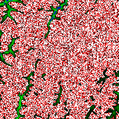

名前
ST_MapAlgebraExpr — 1バンド版: 入力バンドに対する妥当なPostgreSQL代数演算で形成された、指定したピクセルタイプとなる1バンドラスタを生成します。バンドを指定しない場合には、1番を仮定します。
概要
raster ST_MapAlgebraExpr(raster rast, integer band, text pixeltype, text expression, double precision nodataval=NULL);
raster ST_MapAlgebraExpr(raster rast, text pixeltype, text expression, double precision nodataval=NULL);
説明
![[警告]](images/warning.png) | |
ST_MapAlgebraExpr は2.1.0で非推奨になりました。代わりにST_MapAlgebra (数式版) を使います。 |
入力ラスタ (rast)に対してexpressionで定義される妥当なPostgreSQL代数演算で形成されるラスタを返します。生成されるラスタは指定したピクセルタイプとなる1バンドラスタです。bandを指定しない場合には、1番と仮定します。新しいラスタは、元のラスタと同じ地理参照、幅、高さを持ちますが、一つのバンドしか持ちません。
pixeltypeが渡された場合には、新しいラスタのバンドは、そのピクセルタイプになります。pixeltypeにNULLが渡された場合には、新しいラスタは入力rastのバンドのピクセルタイプと同じになります。
数式の中では、[rast]で元のバンドのピクセル値を、[rast.x]で1始まりの列番号、[rast.y]で1始まりの行番号を、それぞれ参照することができます。
Availability: 2.0.0
例
元のラスタから1バンドラスタを生成します。元のラスタバンドの値について2で割った余りが入ります。
ALTER TABLE dummy_rast ADD COLUMN map_rast raster;
UPDATE dummy_rast SET map_rast = ST_MapAlgebraExpr(rast,NULL,'mod([rast]::numeric,2)') WHERE rid = 2;
SELECT
ST_Value(rast,1,i,j) As origval,
ST_Value(map_rast, 1, i, j) As mapval
FROM dummy_rast
CROSS JOIN generate_series(1, 3) AS i
CROSS JOIN generate_series(1,3) AS j
WHERE rid = 2;
origval | mapval
---------+--------
253 | 1
254 | 0
253 | 1
253 | 1
254 | 0
254 | 0
250 | 0
254 | 0
254 | 0
ピクセルタイプが2BUIの1バンドラスタを生成します。元のラスタに対して再分類を行った値が入り、NODATA値を0に設定します。
ALTER TABLE dummy_rast ADD COLUMN map_rast2 raster;
UPDATE dummy_rast SET
map_rast2 = ST_MapAlgebraExpr(rast,'2BUI'::text,'CASE WHEN [rast] BETWEEN 100 and 250 THEN 1 WHEN [rast] = 252 THEN 2 WHEN [rast] BETWEEN 253 and 254 THEN 3 ELSE 0 END'::text, '0')
WHERE rid = 2;
SELECT DISTINCT
ST_Value(rast,1,i,j) As origval,
ST_Value(map_rast2, 1, i, j) As mapval
FROM dummy_rast
CROSS JOIN generate_series(1, 5) AS i
CROSS JOIN generate_series(1,5) AS j
WHERE rid = 2;
origval | mapval
---------+--------
249 | 1
250 | 1
251 |
252 | 2
253 | 3
254 | 3
SELECT
ST_BandPixelType(map_rast2) As b1pixtyp
FROM dummy_rast
WHERE rid = 2;
b1pixtyp
----------
2BUI
|
 元のラスタ (rast_viewカラム)
|
 rast_view_ma
|
新しいバンドを三つ持つラスタを生成します。元のバンドを三つ持つラスタと同じピクセルタイプです。1番バンドは地図代数関数によって変更され、残りの二つのバンドは値が代わりません。
SELECT
ST_AddBand(
ST_AddBand(
ST_AddBand(
ST_MakeEmptyRaster(rast_view),
ST_MapAlgebraExpr(rast_view,1,NULL,'tan([rast])*[rast]')
),
ST_Band(rast_view,2)
),
ST_Band(rast_view, 3)
) As rast_view_ma
FROM wind
WHERE rid=167;